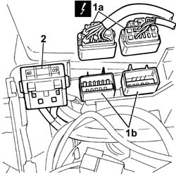
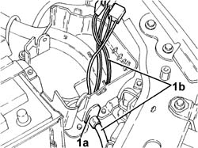
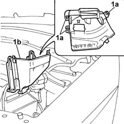
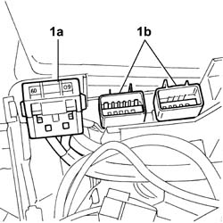

5505A29 container of supplementary junction unit in engine bay - r r with supplementary junction unit removed
- Path
- Procedures > 55 ELECTRICAL EQUIPMENT > 5505 ELECTRICAL CIRCUIT FOR INSTRUMENTS/INDICATORS > 5505A multi-function components > 5505A29 container of supplementary junction unit in engine bay - r r with supplementary junction unit removed
- Kind
- repair procedure (removal / refitting; the operation number is the code)
- Applies to
- all engines; all production periods
- Interactive page
- https://sloeber94.github.io/elrnDB-fDbl/en/#/2584878
Applies to: all engines; all production periods
 Removing
Removing
 Refitting
Refitting1. Disconnect the electrical connections (1a) and remove the connections (1b) from the housing in the container.
 | Name | Connector |
|---|---|---|
1a | Front/engine coupling |
2. Release the fuse carrier, complete with fuse, from the housing and place it at the side.

Applies to: all engines; all production periods
1. Remove the cable loom (1a) and release the wiring (1b).

Applies to: all engines; all production periods
Release the entire cable loom from the retaining bands and place it at the side.
1. Undo the fixing bolts (1a) and remove the container (1b).

Applies to: all engines; all production periods
Refitting
RemovingPosition the container and secure it using the bolts.
Renew the correct routing for the cable loom and secure it to the container using new retaining bands.
1. Fit the fuse carrier, complete with protective fuse (1a) and male type connectors (1b) in the housing.

Applies to: all engines; all production periods
Connect the electrical connection.
| Name | Connector |
|---|---|---|
- | Front/engine coupling |